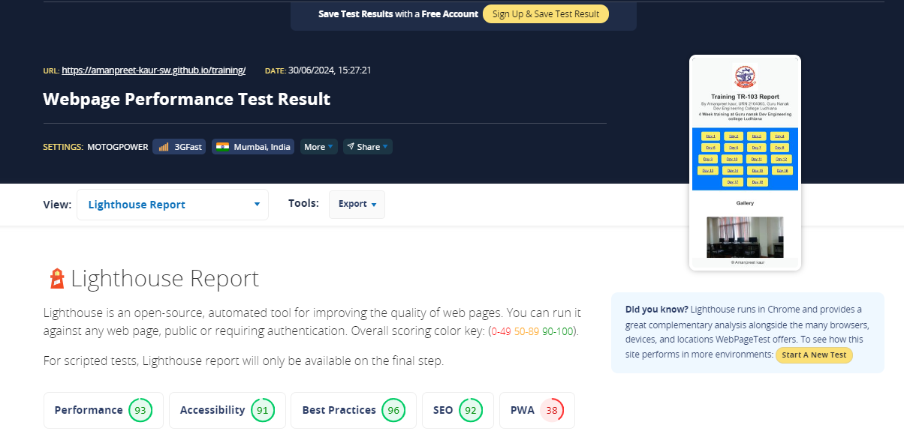
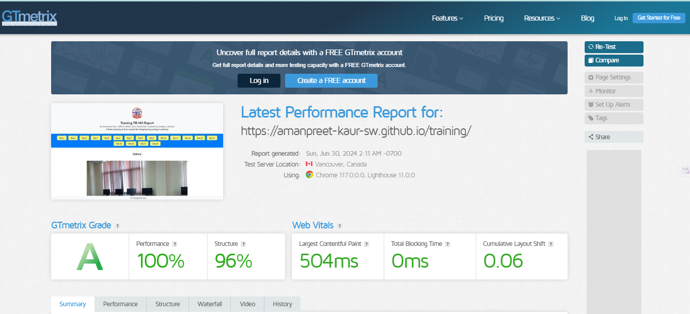

DAY 6 REPORT
FUNCTIONAL REQUIREMENT(FR)
NON FUNCTIONAL REQUIREMENT(NFR)
Web 3.0 focus on NFR
- Performance
- Security
- Reliability
HOW TO ENHANCE THE PERFORMANCE OF THE SYSTEM
By using different tools we can measure the performance of our website.
- Google page speed
- Lighthouse
- Gtmatrix
Google page speed


Lighthouse

Gtmatrix
